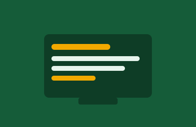
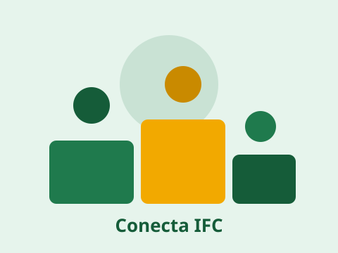
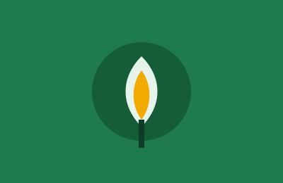
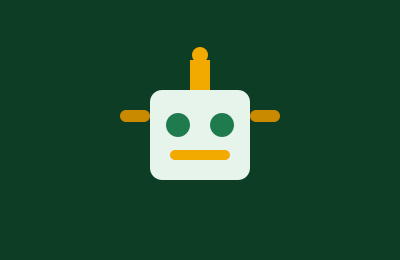
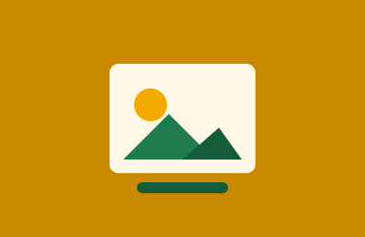

Tecnologia
Desenvolvimento e programação
Aplicativos, sites e sistemas construídos nas aulas de informática e nos clubes de programação da escola.
Ver projetos de tecnologiaO Conecta IFC reúne, em um só portal, os projetos, as notícias e os eventos criados pela comunidade estudantil. Um espaço para compartilhar ideias, inspirar novos trabalhos e valorizar quem constrói conhecimento.
Conhecer os projetos
Explore as principais áreas em que os estudantes têm desenvolvido trabalhos ao longo do semestre.

Aplicativos, sites e sistemas construídos nas aulas de informática e nos clubes de programação da escola.
Ver projetos de tecnologia
Hortas escolares, coleta seletiva e campanhas que aproximam a escola das questões ambientais da comunidade.
Ver projetos ambientais
Protótipos, competições e experimentos criados pelos estudantes do clube de robótica e de eletrônica.
Ver projetos de robótica
Sarais, exposições e produções culturais que dão voz à criatividade dos estudantes da escola.
Ver projetos culturaisFique por dentro do que está acontecendo no portal. Reunimos aqui um resumo das publicações mais recentes da comunidade estudantil.